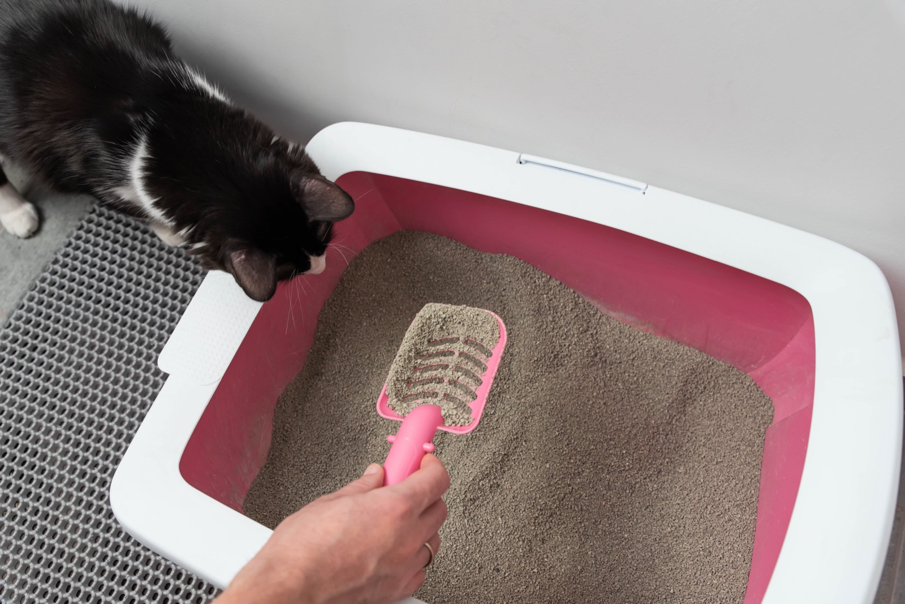

catadoption_pune
catadoption_pune
Short version: move the box to a spot that stays dry after a proper downpour (not one that just looks dry on a sunny day), raise it a few centimetres off the floor, switch to small packs of litter, and leave your sitter one page of instructions. That's the whole system. The rest of this page is how I actually do it.
The problem isn't the rain. It's the floor.
Monsoon litter trouble is really three small problems stacked up: floors that stay damp for hours, wet paws tracking litter gunk through the house, and litter that turns soggy before the cat ever uses it. None of them needs new equipment to fix. They need the box moved, lifted, and fed differently for three months.
This week I did the exercise myself, after every rain, in my own house. The spot I would have sworn was safe wasn't. Which is the whole point of the next section.
Map your dry spots — after the rain, not before
Wait for one honest downpour, then walk the house and look at the floor. You're marking three things:
Leak walls. Any wall with an old seepage stain will sweat again this year. Don't put the box against it, even if it's dry today.
Splash zones. The arc inside any window or balcony door that catches slanted rain. Puddles wander further than you think. Check an hour after the rain stops, not during.
The path. Wherever the box goes, your cat walks there on damp paws and walks back with litter stuck to them. Lay a washable mat along that last stretch: it catches the tracked litter so your floor doesn't.
Then lift the box 5–8 cm off the floor. A paver block, a wooden plank across two bricks, or a sturdy inverted tray all work. The point is that a wet-mopped or seeping floor never touches the base of the box, and the litter inside stays drier for days longer.
A ready-made litter-trapping mat works too, but an old rubber doormat or a folded jute rug does the same job and washes just as well.
Litter in 90% humidity: buy small, seal everything
Clumping litter works by grabbing moisture, and in a Pune July, the air itself is moisture. Open a 10 kg bag in June and by mid-monsoon the bottom half is damp, heavy and half-clumped before it's seen a cat.
The litter we keep coming back to. Pet Pattern's 5 kg tray refill on Shopsy, a small pack, which is the whole point in July. Plenty of brands print "low dust" on the bag; this one actually is, it clumps properly, a tray lasts longer than the others we have tried, and it does not smell. One warning from experience: there are dupes about, and more than once we ordered this and something else came home, so check the pack when it arrives. Any small pack of clumping litter from the corner pet shop does the job too; what matters more than the brand is the size of the bag and the lid on the dabba.
So for these three months, change how you buy, not what you buy: small packs, used up fast, stored sealed. A small pack finishes before the humidity gets to it. Whatever you buy, decant it into something airtight: a steel dabba or an old rice container with a good lid beats any bag clip.
Covered boxes: dry on the outside, damp on the inside

A covered box sounds like the obvious monsoon answer: it keeps drips and splash out. The trade-off is that it also keeps humidity in. Inside a closed box in July, damp litter and smell build up faster, and some cats will simply refuse the whole arrangement.
If you use one: scoop more often than you do in winter, and take the door flap off for the season so air actually moves through. If you're buying one, pick a design with real ventilation, or make your own weather shield by placing an open box under a stool with a towel over the top. Roof, airflow, no trapped smell.
What the scoop goes into. Scooped litter smells faster in July than in any other month, so it gets bagged and tied the same day, not left in an open bin. Any bag you already have will do. I use Beco's compostable garbage bags for this because they don't leak on the way down to the building's bin. A sheet of old newspaper folded around the scoop-load and dropped straight into the day's rubbish costs nothing and works too.
Travelling? Sitter-proof the setup before you go
Monsoon is family-visit season, and a litter setup that lives in your head fails the day someone else runs it. Before you travel, leave one page (paper, not a forwarded chat message) with four things on it:
1. Where the box is and why it's there, so a well-meaning sitter doesn't helpfully move it back to the nice-looking spot that floods. 2. The scooping schedule. 3. Where the sealed litter and the spare mat are. 4. What normal looks like for your cat, so they can tell ordinary monsoon grumpiness from something worth a call.
And don't move the box to a new spot the day before you leave: a new location and a new human at the same time is how accidents happen. Shift it a week early so the cat has settled before you're gone.
The three-month checklist
☐ Walk the house after one real downpour; mark leak walls and splash zones · ☐ Move the box to a proven dry spot, a week before you need it to matter · ☐ Raise it 5–8 cm · ☐ Washable mat on the walking path · ☐ Small litter packs only, decanted into an airtight container · ☐ Covered box: flap off, scoop more · ☐ One-page sitter note before any trip.
Questions? DM us.
We're @catadoption_pune on Instagram — DMs are how everything here works.